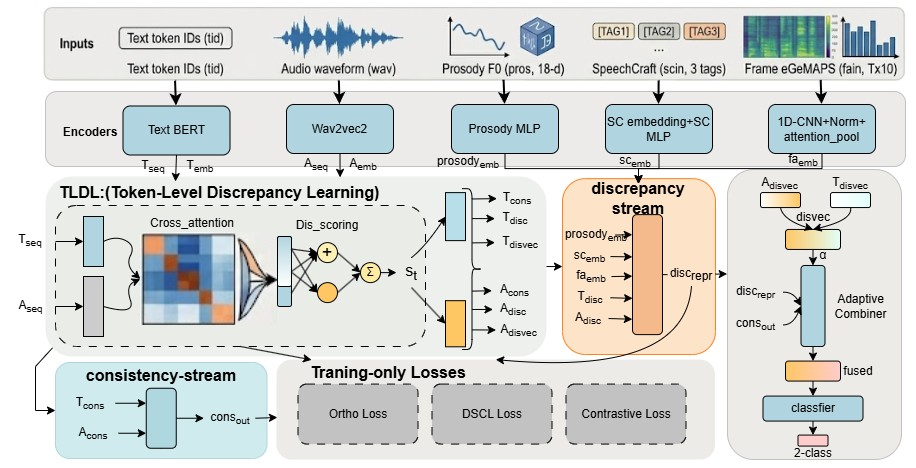
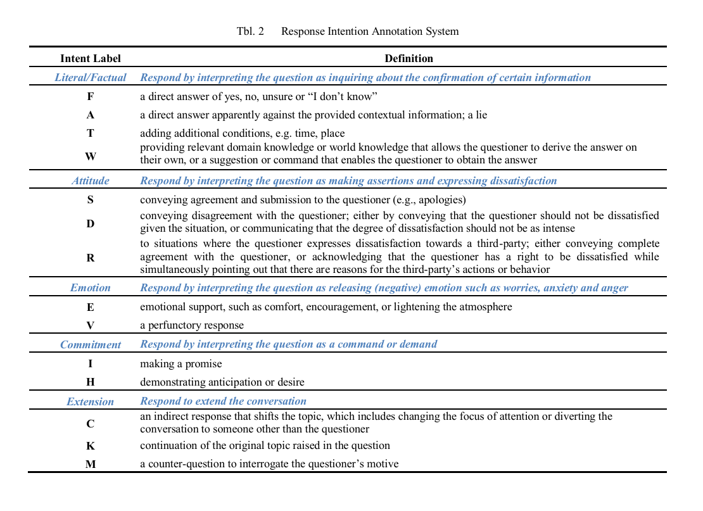

Abstract
Existing multimodal speech-language understanding methods mainly emphasize cross-modal consistency fusion and are effective at modeling the collaborative relationship between text and speech. However, they remain insufficient for deep pragmatic phenomena such as rhetorical questions, sarcasm, and indirect expressions. In such spoken communication scenarios, speaker intention is often not directly conveyed by literal content alone, but is jointly determined by fine-grained patterns of consistency and conflict between textual semantics and vocal expression. As a result, relying solely on a unified fusion representation is insufficient to capture deep pragmatic cues.
To address this issue, we propose the Consistency-Discrepancy Decoupling Network (CDD-Net), which explicitly models cross-modal consistency and semantic discrepancy. Specifically, the Token-Level Discrepancy Localization (TLDL) module identifies cross-modal conflict regions at the granularity of text tokens and speech frames. The Dual-Space Contrastive Learning (DSCL) mechanism organizes multimodal evidence into a consistency semantic space and a discrepancy semantic space, thereby reducing the interference between semantically distinct but functionally different cues in a shared representation. Furthermore, Discrepancy-Guided Contrastive Pairing (DGCP) and Consistency-Discrepancy Reconstruction (CDR) enhance the discriminability and information completeness of discrepancy-aware representations. In addition, the Raw Fusion Residual (RFR) path improves robustness during training and generalization.
To support research on this task, we construct a speech-text multimodal dataset for Chinese pragmatic spoken language understanding, covering typical scenarios including shallow/deep intention discrimination and fine-grained speech act recognition. Experimental results show that CDD-Net outperforms strong multimodal baselines and several advanced cross-modal models on the fine-grained pragmatic intention recognition task in the constructed dataset. Further analysis demonstrates that explicitly modeling cross-modal semantic discrepancy and structurally representing consistency and discrepancy are effective for Chinese pragmatic spoken language understanding.
Model Architecture
CDD-Net is designed for two complementary tasks: SR (Speech Act Recognition, 14-class) and PQP (Pragmatic Question Pair, binary). Both share the TLDL backbone for consistency-discrepancy decoupling but employ task-specific fusion heads.


Task Overview
The PQSR benchmark covers two complementary tasks that share speech-text inputs: PQP (Pragmatic Question Pair) — binary literal vs. deep classification on the question utterance; SR (Speech Act Recognition) — 14-class fine-grained intention recognition on the response utterance. The samples below are drawn from the test set and are grouped as Q-R conversational pairs.
Audio Samples
Pair 1 and Pair 3 share identical question text (“现在下课了吗？” — “Is class over?”) but differ in prosody and pragmatic intent. Listen and compare: in Pair 1 the speaker uses a calm, neutral rising tone typical of a genuine information-seeking question (literal); in Pair 3 the speaker uses a sharper, impatient falling contour signaling a rhetorical reprimand (deep) — the speaker already knows the answer and is expressing dissatisfaction.
| Pair | Role | PQP | Text | Translation | Audio | SR Label |
|---|---|---|---|---|---|---|
| 1 | Q | Literal | 现在下课了吗？ | Is class over? | — | |
 Q waveform + spectrogram + TextGrid alignment (character, syllable, stress, boundary) |
||||||
| R | 当然没有下课，不要说话，好好听课 | Of course not. Stop talking and pay attention. | F W W | |||
 R waveform + spectrogram + TextGrid alignment (word, syllable, phone, utterance, intention: F → W → W) |
||||||
| 2 | Q | Deep | 他会跳舞吗？ | Can he dance? | — | |
 Q waveform + spectrogram + TextGrid alignment (character, syllable, stress, boundary) |
||||||
| R | 他可能会跳舞吧，但是重在参与 | Maybe he can, but what matters is participation. | A V | |||
 R waveform + spectrogram + TextGrid alignment (word, syllable, phone, utterance, intention: A → V) |
||||||
| 3 | Q | Deep | 现在下课了吗？ | Is class over? (rhetorical) | — | |
 Q waveform + spectrogram + TextGrid alignment — compare with Pair 1 Q: same text, different prosody |
||||||
| R | 马上就下课了 | It’ll be over soon. | W D | |||
 R waveform + spectrogram + TextGrid alignment (word, syllable, phone, utterance, intention: W + D) |
||||||
| 4 | Q | Deep | 他跟这件事有关系吗？ | Does he have anything to do with this? | — | |
 Q waveform + spectrogram + TextGrid alignment (character, syllable, stress, boundary) |
||||||
| R | 他跟这件事儿没关系啊 | He has nothing to do with it. | F R | |||
 R waveform + spectrogram + TextGrid alignment (word, syllable, phone, utterance, intention: F + R) |
||||||
Response Intention Annotation System
The SR task uses a 14-class taxonomy organized into five meta-categories. Each prosodic phrase in a response utterance is independently labeled with one of these intent labels. The SR labels shown in the audio samples above (e.g., F, W, A, V, D, R) correspond to this taxonomy.

Data Note
This repository contains only a small selection of representative samples for demonstration purposes. For access to the full PQSR benchmark dataset, please contact the authors after the review process.